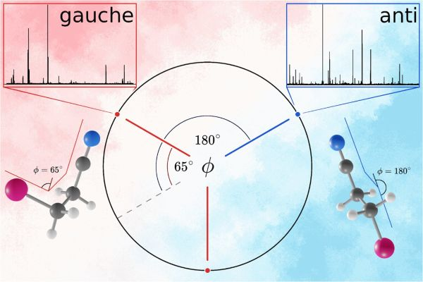
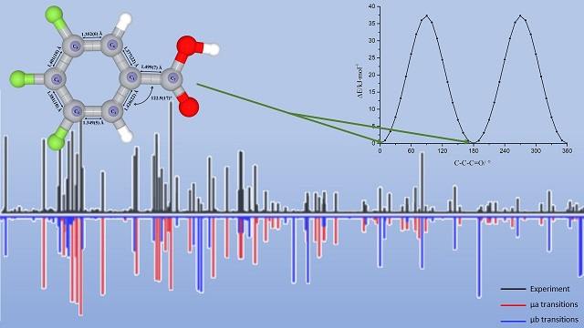
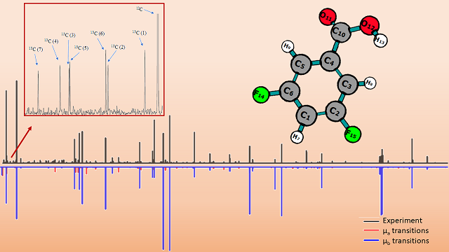

Instruments


Conformational structure and nuclear quadrupole interactions of 3-bromopropionitrile: A combined rotational spectroscopic and quantum chemical study
Thomas Izo, Yasuki Endo, Wei Lin

The conformational structure and nuclear quadrupole interactions of 3-bromopropionitrile were investigated using high-resolution cavity Fourier transform microwave spectroscopy and quantum chemical calculations. Potential energy scans along the Br–C–C–C dihedral angle predict two stable conformers, with the anti conformer as the global minimum and the gauche conformer lying 2.4 kJ mol-1 higher in energy at the MP2/aug-cc-pVTZ level after zero-point energy correction. The rotational spectra of both conformers were recorded in the 8–38 GHz region, and the spectra of the 79Br and 81Br isotopologues were assigned for each conformer. Improved rotational and centrifugal distortion constants were obtained for the anti conformer, while the gauche conformer was spectroscopically characterized at high resolution for the first time. The bromine nuclear quadrupole hyperfine structure was resolved for both conformers, and nitrogen quadrupole coupling constants were newly determined for 3-bromopropionitrile. The quadrupole coupling tensors show strong conformational dependence, particularly for the gauche conformer, where the large off-diagonal tensor components are consistent with a substantial rotation of the electric field gradient tensor relative to the inertial principal axes. Analysis of the diagonalized bromine quadrupole coupling tensors within the extended Townes–Dailey model indicates that the C–Br bond is predominantly σ-type, with only a small π-type anisotropic contribution and greater ionic character than that in bromoacetonitrile. The experimental constants are in good agreement with calculated values and provide a detailed conformational and hyperfine characterization of 3-bromopropionitrile.
Microwave spectroscopy and large amplitude motion of chlorosulfonic acid (ClSO2OH)
Aaron J. Reynolds, Diego E. Rodriguez, Wei Lin, Kenneth R. Leopold

The high-resolution rotational spectrum of chlorosulfonic acid (ClSO2OH) has been studied using both broadband and cavity-based Fourier transform microwave spectrometers over the frequency range of 5–18 GHz. a-, b-, and c-type transitions have been recorded for both the 35Cl and 37Cl isotopologues. The observation of c-type lines establishes that the molecule lacks a plane of symmetry and suggests that the OH group can undergo large amplitude motion between equivalent structures. Interconversion between these structures can be achieved via internal rotation through two inequivalent barriers occurring at Clsingle bondSsingle bondOsingle bondH torsional angles of 0 or 180 degrees. As in previous work on triflic and methanesulfonic acids, two states are observed and are treated as tunneling states which are presumed to arise primarily due to motion through the lower of the two barriers. The a- and c-type transitions occur within each of these states while the b-type transitions cross between them. Rotational, centrifugal distortion, and chlorine nuclear quadrupole coupling constants, as well as the energy difference between the two tunneling states and associated coupling constants, have been determined. The experimental tunneling energies, ΔE, for the 35Cl and 37Cl isotopologues are 52.6926(16) MHz and 52.6397(46) MHz, respectively. Quantum chemical calculations were carried out using MP2 and B3LYP density functional theory (DFT) methods with an aug-cc-pVTZ basis set. The rotational constants from the optimized structures were in good agreement with the experimental values. The lowest energy barrier for OH motion was calculated to be 2.6 kcal/mol at the MP2/aug-cc-PVTZ level. The effects of the large amplitude motion are similar to those recently reported for triflic acid (CF3SO2OH) and methanesulfonic acid (CH3SO2OH). However, while the tunneling splittings in chlorosulfonic and triflic acids are virtually identical, they differ significantly from that of methanesulfonic acid.
Conformational landscapes of symmetrically fluorine-substituted benzoic acids II: Calculations and measurements for the rotational spectrum and structure of 3,4,5-trifluorobenzoic acid
Jingling Hong, Alitza Gracia, Savannah Romero, Mingfei Zhou，Wei Lin, Weixing Li

Calculations on the structure of 3,4,5-trifluorobenzoic acid were made using the Gaussian 16 program. The potential energy surfaces were scanned along C-C-C=O and O=C-O-H dihedral angles at the B3LYP/6-311G level to analyze its conformational landscape. Two conformations were identified and reoptimized at the B3LYP/aug-cc-pVTZ level. The result indicates that 3,4,5-trifluorobenzoic acid prefers a planar structure in its global minimum conformation. The pure rotational spectra of 3,4,5-trifluorobenzoic acid were measured in the frequency range of 6 – 12.5 GHz using a chirped pulse Fourier transform microwave (CP-FTMW) spectrometer. The spectra of the parent, seven 13C, and one deuterium singly substituted isotopologues were analyzed and fitted to measurement accuracy for a semi-rigid asymmetric top molecule. The rotational constants and centrifugal distortion constants were accurately determined. The rotational constants for the parent isotopologue are A = 1535.31408(32) MHz, B = 650.31751(16) MHz, and C = 456.98499(12) MHz. The effective structure of its ground vibrational state was determined from the spectra of the mono-substituted isotopologues. The agreement between the calculated and experimental spectroscopic constants is excellent.
Conformational landscapes of symmetrically fluorine-substituted benzoic acids I: Microwave spectroscopic and theoretical studies on 3,5-difluorobenzoic acid
Alitza Gracia, Jingling Hong, Rebakah Arismendi, Mingfei Zhou, Weixing Li, Wei Lin

We report our combined theoretical and spectroscopic studies on 3,5-difluorobenzoic acid. Using a chirped pulse Fourier transform microwave (CP-FTMW) spectrometer, we recorded and analyzed the rotational spectrum spanning the frequency range of 6 - 12.5 GHz. Quantum chemical calculations were employed to analyze the conformational changes and landscapes of 3,5-difluorobenzoic acid. These calculations focused on studying the potential energy surfaces along the C-C-C=O and O=C-O-H dihedral angles at the B3LYP/6-311G level. Based on the computational results, we identified the global minimum conformer 1 as well as the local minimum conformer 2. We discussed and interpreted the geometric structures of the relevant conformations, with a particular emphasis on the interactions between the carboxylic group and the substituted fluorine atoms. Furthermore, these findings were compared to benzoic acid in internal strains and acidities. In our spectral analysis, we successfully identified conformer 1 and its seven 13C singly substituted isotopologues. We derived highly accurate rotational constants for 3,5-difluorobenzoic acid, displaying good agreement with computational results. We established the effective structure of its ground vibrational state using Kraitchman’s equations. Similar to benzoic acid, the global minimum conformation of 3,5-difluorobenzoic acid adopts a planar structure, corroborating our computational outcomes.
Microwave Spectrum and Iodine Nuclear Quadrupole Coupling Constants of 1,1-Diiodoethane
Michael J. Carillo, Wei Lin, Yasuki Endo

The high resolution rotational spectroscopic observation of 1,1-diiodoethane is investigated using a pulsed jet, cavity Fourier transform microwave (FTMW) spectrometer over the frequency range 11.5–18 GHz for the first time. The rotational constants, the centrifugal distortion constants, the nuclear spin-rotation coupling constants, and the complete tensor components of the nuclear quadrupole coupling for both iodine nuclei have been determined and reported. The fitted rotational constants are A = 4548.320446(47), B = 625.629141(55), C = 558.798939(43) MHz and the nuclear quadrupole coupling constants are χaa = -1089.8125(7), χbb – χcc = -542.3162(13), │χab│= 1215.7505(10), χbc = 340.8983(14), and │χac│ = 562.4206(19) MHz. No A-E splittings due to the methyl group internal rotation were observed. Many dipole-forbidden/electric quadrupole coupling allowed transitions were observed in the spectrum due to the large iodine quadrupole coupling effect. Quantum chemical calculations were performed at the CCSD(T)/aug-cc-pVTZ-pp level of theory. The calculated rotational constants, centrifugal distortion constants, and hyperfine constants were used to guide the data analysis.
Microwave Spectrum of the Complex of 3,3,3-trifluoro-2-(trifluoromethyl) Propanic Acid and Formic Acid
Javix Thomas, Micheal J. Carillo, Agapito Serrato III, Fan Xie, Wolfgang Jäger, Yunjie Xu, and Wei Lin

We report the first high resolution spectroscopic observation of the complex of 3,3,3-trifluoro-2-(trifluoromethyl)propanoic acid (TTPA) and formic acid. The rotational spectra were measured using a broadband chirped pulse and a narrow band cavity-based Fourier transform microwave spectrometer in the 8–10 GHz range. The conformational landscape of the TTPA-formic acid complex was explored at several levels of theory. The two most stable TTPA-formic acid conformers are of similar stability and feature the usual cyclic carboxylic double hydrogen bonded ring. Based on the broadband spectra obtained, only one stable heterodimer conformer was observed. We explain the absence of the second conformer to be a result of a double hydrogen tunnelling motion which converts the less stable heterodimer to the one observed in the jet expansion. Further CCSD(T) relative energy calculations confirm that the heterodimer conformer detected contains the most stable TTPA monomeric subunit. It is interesting to note that hydrogen bonding with formic acid offers a new path to effectively convert the less stable TTPA subunit to the most stable one in the jet expansion, while both TTPA monomeric conformers were detected in the same experiment.
BrightSpec MRR Discovery K-Band Spectrometer
This instruemnt is located at the BLHSB2.918, in the Brownsville campus. The BrightSpec Discovery K-Band (18 -26.5 GHz) spectrometer is designed for both fundamental research and educational applications. The instrument includes BrightSpec Edgar software for experiment setup, data visualization and processing, and spectral library comparison. Typical detection level in 60 seconds are in low parts per million (ppm).
Computational Facilities
Access to the cluster computers at Texas Advanced Computing Center (TACC)
The Texas Advanced Computing Center (TACC) designs and operates some of the world's most powerful computing resources.
Ongoing Projects
- Microwave spectroscopy of haloethyl radicals (2-fluoroethyl radical, 2-chloroethyl radical, 1-chloroethyl radical, and 1-iodoethyl radical, collaborating with Prof. Yasuki Endo of National Yang Ming Chiao Tung University of Taiwan)
- Microwave spectroscopy of substituted sulfonic acids and their hydrates (fluorosulfonic acid, chlorosulfonic acid, ethanesulfonic acid, and perfluorobutanesulfonic acid)
- Microwave spectroscopy of cyclobutanecarboxylic acid and cyclopentanecarboxylic acid, collaborating with Prof. Garry Grubbs of Missouri S&T)
- Conformational study of Alpelisib (theoretical and NMR), collaborating with Prof. Yonghong Zhang of UTRGV)
- Rovibrational spectroscopy of cyclobutanol and methylene cyclobutane, collaborating with Canadian Light Source)
- Microwave dielectric spectroscopy of liquids and solids(collaborating with Prof. Yong Zhou of UTRGV)
- Infrared Spectra of the 1-Iodopropyl Radical, collaborating with Prof. Yuan-Pern Lee of National Yang Ming Chiao Tung University of Taiwan)
- Microwave spectroscopy of fluorine-substituted benzoic acids and their complexes with formic acid and water(collaborating with Prof. Weixing Li of Fudan University)
- Solvation proces of perfluorooctanoic acid (PFOA)(collaborating with Prof. Haoyuan Chen of UTRGV)